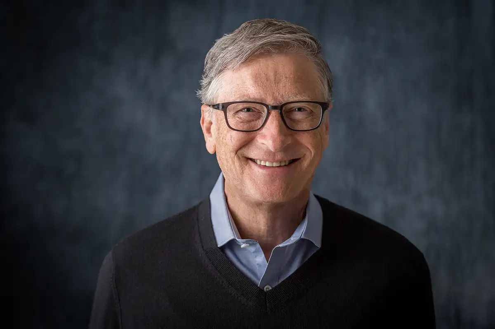

Bill Gates
American computer programmer, businessman, and philanthropist
About
- Bill Gates, in full William Henry Gates III, (born Oct. 28, 1955, Seattle, Wash., U.S.), U.S. computer programmer and businessman known for co-founding the software giant Microsoft Gates held the positions of chairman, chief executive officer (CEO), president, and chief software architect in microsoft.He was a major entrepreneur of the microcomputer revolution of the 1970s and 1980s.
- He was a major entrepreneur of the microcomputer revolution of the 1970s and 1980s. Gates transitioned into a part-time role at Microsoft and full-time work at the Bill & Melinda Gates Foundation, the private charitable foundation he and his then-wife Melinda established in 2000.
- He stepped down as chairman of the Microsoft board in February 2014 and assumed the role of technology adviser to support newly appointed CEO Satya Nadella.[11] In March 2020, Gates left his board positions at Microsoft and Berkshire Hathaway to focus on his philanthropic efforts on climate change, global health and development, and education.
- Since 1987, Gates has been included in the Forbes list of the world's billionaires. From 1995 to 2017, he held the Forbes title of the richest person in the world every year except from 2010 to 2013. In October 2017, he was surpassed by Amazon founder and CEO Jeff Bezos, who had an estimated net worth of US$90.6 billion compared to Gates's net worth of US$89.9 billion at the time. As of August 2023, Gates has an estimated net worth of US$126 billion, making him the fifth-richest person in the world according to Bloomberg Billionaires Index.
- Later in his career and since leaving day-to-day operations at Microsoft in 2008, Gates has pursued other business and philanthropic endeavors. He is the founder and chairman of several companies, including BEN, Cascade Investment, TerraPower, bgC3, and Breakthrough Energy.He has donated sizable amounts of money to various charitable organizations and scientific research programs through the Bill & Melinda Gates Foundation, reported to be the world's largest private charity.Through the foundation, he led an early 21st century vaccination campaign that significantly contributed to the eradication of the wild poliovirus in Africa. In 2010, Gates and Warren Buffett founded The Giving Pledge, whereby they and other billionaires pledge to give at least half of their wealth to philanthropy.
Awards - Knight Commander of the Order of the British Empire (2005) Padma Bhushan (2015) Presidential Medal of Freedom (2016) Hilal-e-Pakistan (2022)